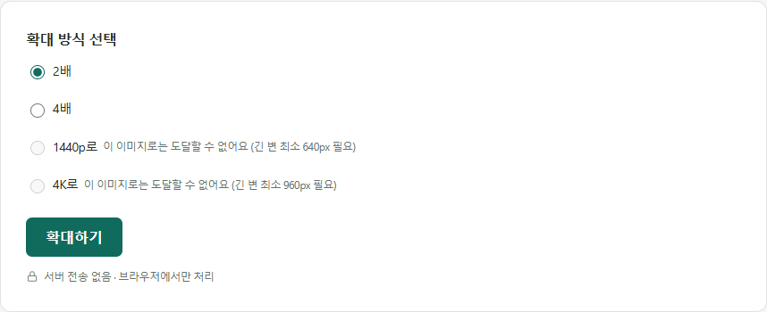

IMAGE TOOLBOX / GUIDE
내 모니터에 딱 맞는 배경화면 크기는
FHD·QHD·4K 해상도 정리와, 작은 사진을 각 해상도까지 키울 수 있는지 정직하게 확인하는 법입니다.
모니터 해상도 3종
FHD(풀HD) — 1920×1080px. 가장 널리 쓰이는 표준 해상도입니다.
QHD(WQHD) — 2560×1440px. FHD보다 한 단계 높은 해상도입니다.
4K(UHD) — 3840×2160px. FHD의 가로세로 각각 2배입니다.
원본 사진이 작다면 — AI 업스케일링이 될지 확인하기
이 사이트의 이미지 업스케일링 도구는 원본 이미지가 가로세로 각각 1000px 이하일 때만 입력받습니다. 그리고 목표 해상도에 따라 확대 가능 여부가 갈립니다 — QHD(1440p 옵션, 목표 2560px)는 원본의 긴 변이 최소 640px 이상, 4K 옵션(목표 3840px)은 최소 960px 이상이어야 AI가 도달할 수 있습니다. 원본이 이보다 작으면 해당 해상도 옵션이 비활성화됩니다. 다만 정해진 배율인 2배·4배 확대는 원본 크기와 관계없이 항상 선택할 수 있습니다.

AI 업스케일링은 있던 픽셀 패턴을 분석해 경계와 질감을 더 선명하게 만드는 것이지, 원본에 없던 정보를 되살리는 것은 아닙니다. 초점이 심하게 나간 사진은 확대해도 개선 폭이 작다는 점은 이 글에서 자세히 다룹니다.
원본 사진이 크다면 — 정확한 크기로 줄이기
원본이 목표 해상도보다 크다면 확대할 필요 없이 이미지 압축 도구의 가로/세로 입력란에 원하는 값(예: 3840×2160)을 직접 넣어 정확한 크기로 줄일 수 있습니다. 다만 대부분의 모니터가 채택한 16:9 비율과 원본 사진의 비율이 다르면, 값을 그대로 넣었을 때 화면이 가로나 세로로 눌려 보일 수 있습니다. 이런 경우에는 사진 편집 프로그램으로 모니터 비율에 맞게 먼저 자른 뒤 이 도구로 크기를 맞추세요.
자주 묻는 질문
800×600 사진을 4K 배경화면으로 만들 수 있나요?
긴 변인 800px이 960px보다 작아서 4K(3840px) 옵션은 비활성화됩니다. 대신 QHD(2560px, 최소 640px 필요)는 시도할 수 있고, 고정 배율인 4배 확대(3200×2400)도 선택할 수 있습니다.
왜 업로드할 수 있는 원본 크기에 제한이 있나요?
AI 모델이 브라우저 안에서 직접 연산하기 때문에, 너무 큰 원본을 넣으면 처리 시간이 오래 걸리거나 브라우저가 멈출 수 있어 가로세로 각각 1000px로 제한하고 있습니다.
4배 확대와 4K 옵션은 뭐가 다른가요?
4배 확대는 원본 크기의 정확히 4배로 키우는 고정 배율입니다. 4K 옵션은 원본 비율과 관계없이 긴 변을 3840px에 맞추는 목표 해상도 방식이라, 필요한 확대 배율이 원본 크기에 따라 달라집니다.